2026-10-26 CSI呼吸推定回路の比較実験今回の結果
VMDは反復数を増やすだけでは改善しない。初期中心の配置を変える候補が得られた。
実CSI 8件で、既定K=3・R=4のLS参照値との差は平均10.657 BPM。K=4・R=4では1.108 BPMとなった。
K=3・R=4のまま初期中心を[8,24,48]から[8,16,24]へ変えても差が小さくなり、同じ制約数で試せる改善候補となった。
Lomb–Scargleは1〜32本を比較。実CSIで本数を増やしたときの全サブキャリア参照値との一致は非単調だった。各構成の証明生成時間を測定し、完了分を表に記録した。
今回は正解データなしで評価する。この報告の「差」は手法間の一致度であり、呼吸数の正解誤差ではない。本編はRaw実データの結果に限定する。
実験条件と評価指標
10月19日資料の「VMDモード数・反復数」「LSサブキャリア数」を分けて検証した。元のRawデータと本番コードは変更していない。
| 項目 | VMD近似回路 | Lomb–Scargle E2E回路 |
|---|
| 元データ | Raw直下8収録・冒頭48秒 | 同じ8収録・冒頭48秒 |
| 入力 | 時刻補間→SNR選択→filter→PCA→2 Hz | Tx0/Rx0固定の複素CSIと元の記録時刻 |
| 点数 | 96観測点＋32点ゼロ埋め→128点整数 | 64観測点を抽出・I/Q量子化 |
| 変える条件 | K=1,2,3,4,5,8 / R=1,2,4,8,16,32 | 1,2,4,8,16,32本（入れ子選択） |
| 固定条件 | DFT、整数更新、全域最大ピーク規則 | 32周波数bin、同じ32候補による量子化スケール |
| 実データの参照 | 同じ128点波形上のSciPy LS | 同じ64点・同じ周波数gridの浮動小数点LS |
LSの既存エッジ入力は平坦化したCSI配列から等間隔8列を選ぶ。今回は本数の影響を切り分けるため、同じTx/Rx対に固定し、既存列を残したまま追加する入れ子選択とした。したがって、この8本条件は旧入力選択をそのまま再現した条件ではない。旧方式の補足比較はlomb/legacy8_sensitivity.csvに保存した。
VMD表のLS参照と、生CSIを入力するLS回路は異なる。前処理・点数・周波数grid・ピーク選択規則が違うため、二つの表を同条件での方式の勝敗として解釈しない。
同じ実測収録に対する両回路の推定値
| 収録 | VMD既定 | VMD初期中心変更 | LS 8本 | LS 32本 |
|---|
| csi_20260519_114943 | 7.500 | 12.188 | 7.110 | 7.110 |
| csi_20260520_013702 | 22.500 | 22.500 | 12.591 | 6.425 |
| csi_20260526_034004 | 43.125 | 12.188 | 9.850 | 9.850 |
| csi_20260526_072608 | 7.500 | 13.125 | 13.961 | 14.646 |
| csi_20260530_170637 | 42.188 | 12.188 | 19.441 | 7.795 |
| csi_20260708_162812 | 8.438 | 8.438 | 10.535 | 11.220 |
| csi_20260821_165306 | 19.688 | 12.188 | 11.906 | 11.906 |
| csi_20260907_185130 | 7.500 | 12.188 | 7.795 | 7.795 |
単位BPM。同じ48秒区間を起点とした、前処理を含むパイプライン全体の出力比較。VMDは全域最大ピーク、LSの表示BPMは正常帯域内ピークであり、LSの値が範囲内に入ることだけでは正しさを評価できない。LSには別に全域ピーク・正常判定出力もある。表のCSV
Rawデータの時刻品質
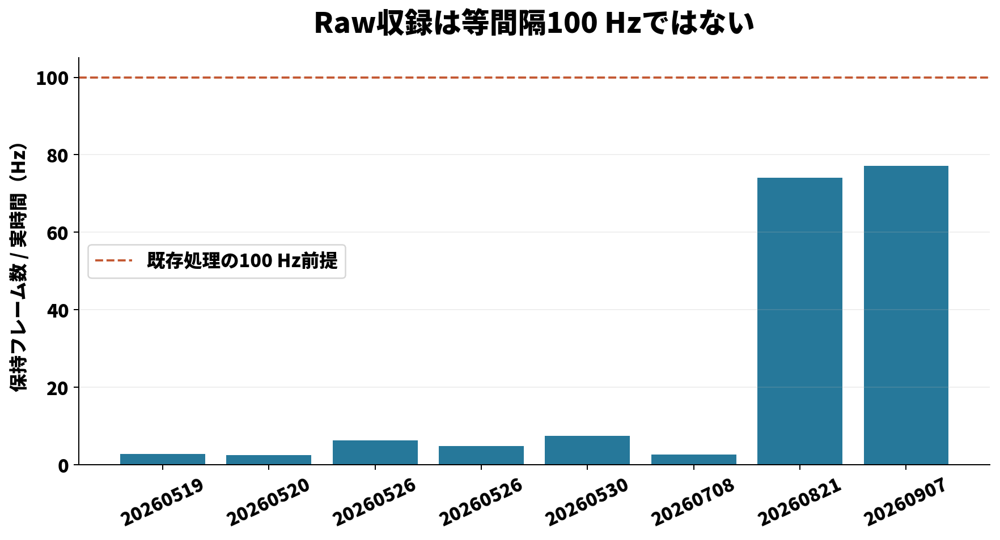
実時刻から計算した保持フレームの平均レート PDF| 収録 | 長さ(s) | 保持行数 | 平均Hz | 最大間隔(s) |
|---|
| csi_20260519_114943 | 53.217 | 150 | 2.800 | 1.125 |
| csi_20260520_013702 | 58.472 | 148 | 2.514 | 1.475 |
| csi_20260526_034004 | 58.088 | 367 | 6.301 | 1.229 |
| csi_20260526_072608 | 57.266 | 278 | 4.837 | 1.030 |
| csi_20260530_170637 | 58.367 | 434 | 7.419 | 0.921 |
| csi_20260708_162812 | 58.682 | 157 | 2.658 | 1.030 |
| csi_20260821_165306 | 59.518 | 4406 | 74.011 | 0.243 |
| csi_20260907_185130 | 58.579 | 4518 | 77.109 | 0.669 |
全8収録が64秒より短い。VMDの末尾16秒は観測値ではない。100 Hzへの補間は新しい情報を追加せず、疎な収録と大きい欠測間隔の限界は残る。sample_dataの2記録は補足データとして保存し、主表の8件には混ぜていない。
VMD：モード数・反復数の比較
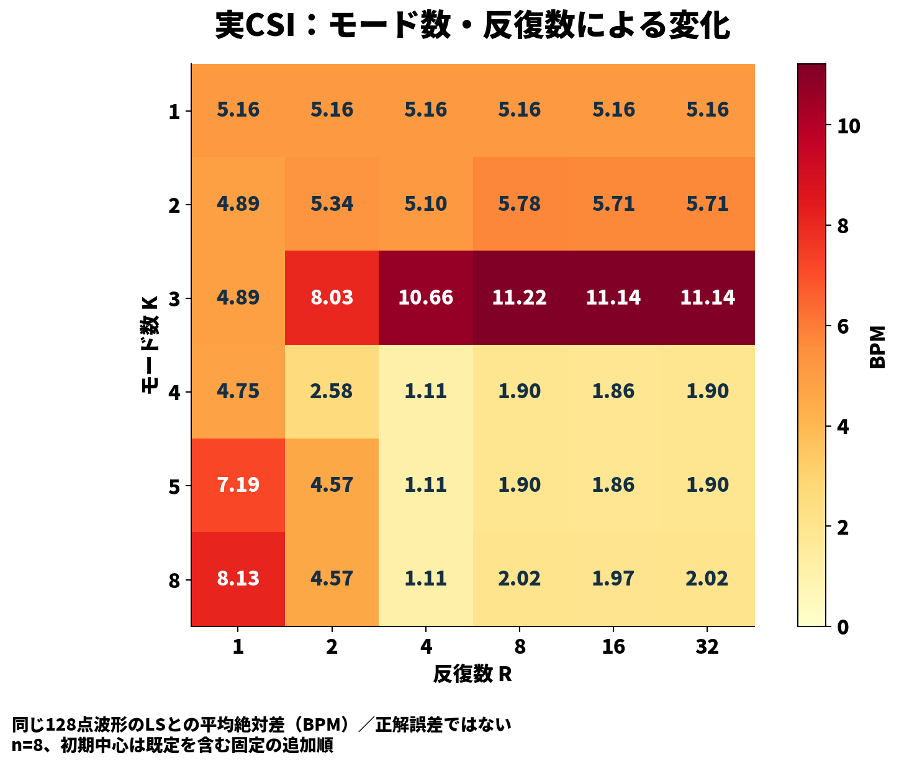
同じ入力波形のLSとの平均絶対差。正解誤差ではない。 PDF| K | R | 平均絶対差(BPM) | 1 BPM以内の一致率 |
|---|
| 3 | 4 | 10.657 | 12.5% |
| 3 | 32 | 11.145 | 12.5% |
| 4 | 4 | 1.108 | 75.0% |
| 5 | 4 | 1.108 | 75.0% |
| 5 | 32 | 1.899 | 75.0% |
| 8 | 32 | 2.017 | 62.5% |
36条件のスイープは回路と同じ整数演算を実装したPython参照で実行した。代表4構成×実8件で実回路witnessと全最終係数・中心・出力を照合した。36構成すべてのGroth16証明を生成した実験ではない。
既定K=3では反復数だけを増やしても一致が良くならない。K=4以降の初期中心にはbin16が追加されるため、Kの効果と初期中心の効果が混在している。
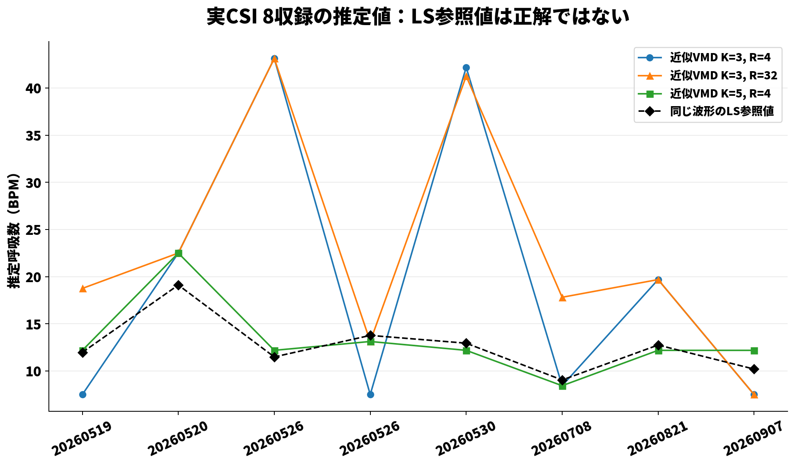
収録ごとの推定値。高いBPMが正しいかはGTなしでは判断できない。 PDF
VMD：初期中心の感度分析
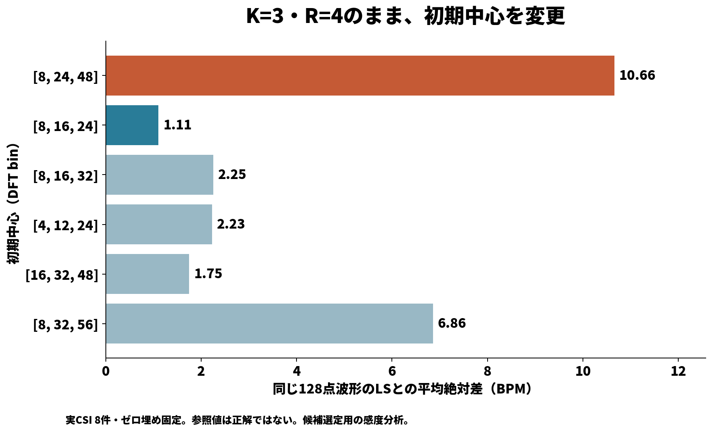
モード数3・反復4・ゼロ埋めを固定した比較 PDF| 初期中心(bin) | 同じ128点LSとの平均絶対差(BPM) |
|---|
| [16, 32, 48] | 1.749 |
| [4, 12, 24] | 2.228 |
| [8, 16, 24] | 1.108 |
| [8, 16, 32] | 2.253 |
| [8, 24, 48] | 10.657 |
| [8, 32, 56] | 6.858 |
この表は前のスイープと同じ128点LSを参照する。[8,16,24]は既定と同じ340,734制約。ただし、この8記録に基づく候補選定であり、独立データでの検証は未実施。低域へ中心を寄せる変更なので、高い周波数を含む記録での評価も必要。
VMD：保持される周波数成分
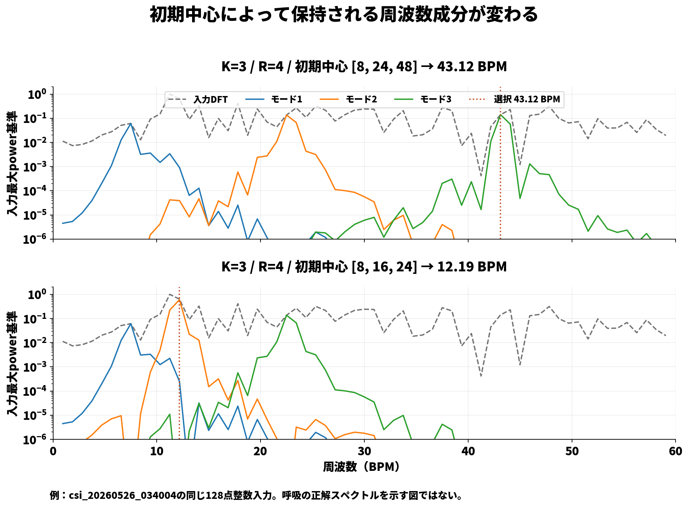
同じ実データ入力に対する既定と候補のモードスペクトル PDFこの例では入力の最大ピーク付近を既定配置のモードが十分に保持せず、別の高域ピークを選ぶ。候補は低域を保持する。どちらが実際の呼吸かは正解データなしでは決められない。
Lomb–Scargle：本数と一致度
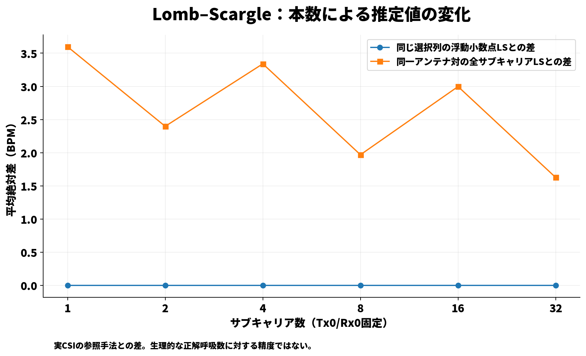
同条件LSとの差と、同一アンテナ対の全tones LSとの差を分離 PDF| 本数 | 実データ：全tonesとの差(BPM) | 実データ：同条件bin一致率 |
|---|
| 1 | 3.596 | 100.0% |
| 2 | 2.398 | 100.0% |
| 4 | 3.340 | 100.0% |
| 8 | 1.969 | 100.0% |
| 16 | 2.997 | 100.0% |
| 32 | 1.627 | 100.0% |
同条件の浮動小数点LSと整数回路の差は小さい一方、どのサブキャリアが選ばれるかで実データ推定値は変化する。本数を増やせば常に全tones参照へ近づくわけではない。全tones参照も呼吸の正解ではない。
Lomb–Scargle：実回路の処理時間
| 本数 | 制約数 | compile(s) | setup(s) | witness平均(s) | prove中央値(s) | verify中央値(s) | 状態 |
|---|
| 1 | 311002 | 9.430 | 90.109 | 0.206 | 5.079 | 0.207 | verified |
| 2 | 346823 | 14.016 | 92.236 | 0.230 | 5.776 | 0.200 | verified |
| 4 | 418469 | 24.091 | 138.010 | 0.281 | 6.852 | 0.187 | verified |
| 8 | 561761 | 45.233 | 222.601 | 0.379 | 12.281 | 0.237 | verified |
| 16 | 848345 | 99.552 | 457.032 | 0.561 | 17.513 | 0.252 | verified |
| 32 | 1421513 | 227.279 | — | 0.927 | — | — | setup_timeout |
witnessは各本数で実8収録の計算時間平均（WASM読込・Node起動等を除く）。prove/verifyは代表1収録に対する3回の中央値。32本もwitness計算は完了している。
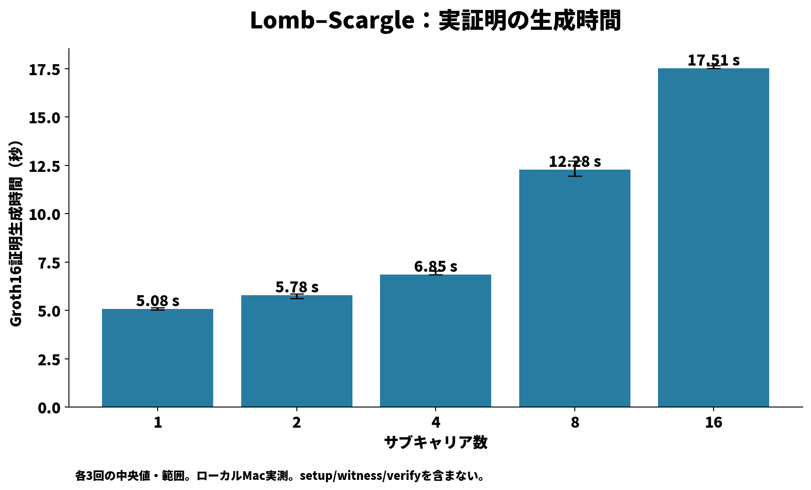
Groth16証明生成：完了構成の3回の中央値と最小〜最大 PDF32本は8 GiBのNodeヒープ上限で鍵生成がメモリ不足となった。12 GiBでの再試行も30分の上限内に完了せず、証明生成・検証時間は未取得（—）。32本の実データ推定値とwitness照合は完了している。これは設定した環境・制限での結果であり、回路が原理的に証明不可能という意味ではない。試行記録
Apple M4 Pro・RAM 24 GiB・macOS 26.6.2上の測定。エッジ端末の実測ではない。compile/setupと鍵contributionは回路構成ごとの準備であり、毎回の推定時間には加えない。LSはCircom O2でコンパイル。ローカルで新たなcontributionを加えた実験用鍵を使用。本番配布用の鍵管理・セレモニー検証は今回の範囲外。共有マシンのwall-clock時間なので微小差の順位には使わない。
検証と保存したコード
| VMD回路 | 制約数 | 最終係数・中心の一致 |
|---|
| vmd_k1_r1 | 100395 | True |
| vmd_k3_r4 | 340734 | True |
| vmd_k5_r8 | 931086 | True |
| vmd_k3_r4_centers8_16_24 | 340734 | True |
VMDはPython整数参照と実際のWASM witnessを照合した。LSも各本数の回路witnessと整数参照を照合し、Groth16 proofをローカルverifyする。入力データのSHA256・時刻品質・環境・再実行コマンドを各ディレクトリに保存した。
入力検査 · VMD再現手順 · LS再現手順
コード画像は元ファイルから行番号付きで生成。HTMLを開いて撮り直すこともできる。
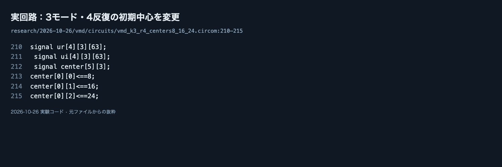
実際にコンパイル・witness照合した初期中心変更候補
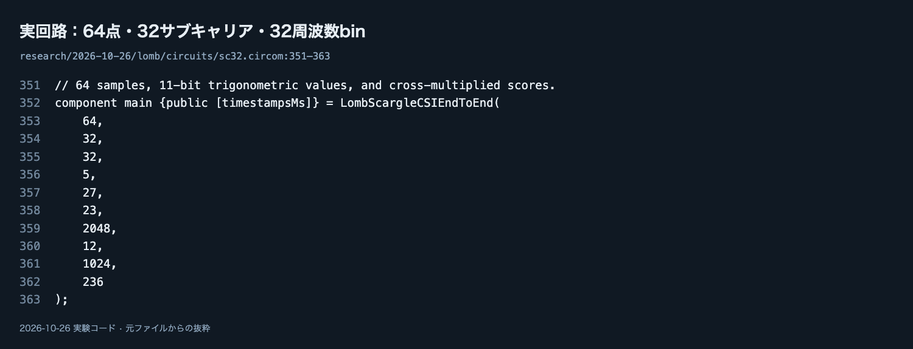
64点・32サブキャリア・32周波数binの回路構成追加の撮影用コード：VMD整数参照 / LS入力条件の固定
追加：公開中間値の波形
処理段階・反復・サブキャリアを切り替える波形ビューアを開く
同じ実測収録 csi_20260526_034004 の診断用回路を別に作成した。VMDは入力波形・DFT・全4反復のモード係数と中心を公開。LSはI/Q・振幅二乗・平均除去・sin/cos基底・射影・スコアの分子/分母を公開する。
実際の公開出力から値を取り出し、両診断回路でGroth16証明を生成・検証した。中間値1要素を改ざんすると同じ証明が拒否されることも確認した。VMDの逆DFT表示とLSの分子/分母の割り算は回路外の描画処理である。
公開中間値は入力波形の情報を明らかにする。通常回路・鍵を変更せず、独立した診断回路で中間値を公開している。鍵と処理時間も通常回路から分離した。
公開出力への接続コード：VMD撮影用HTML / VMD PNG / LS撮影用HTML / LS PNG
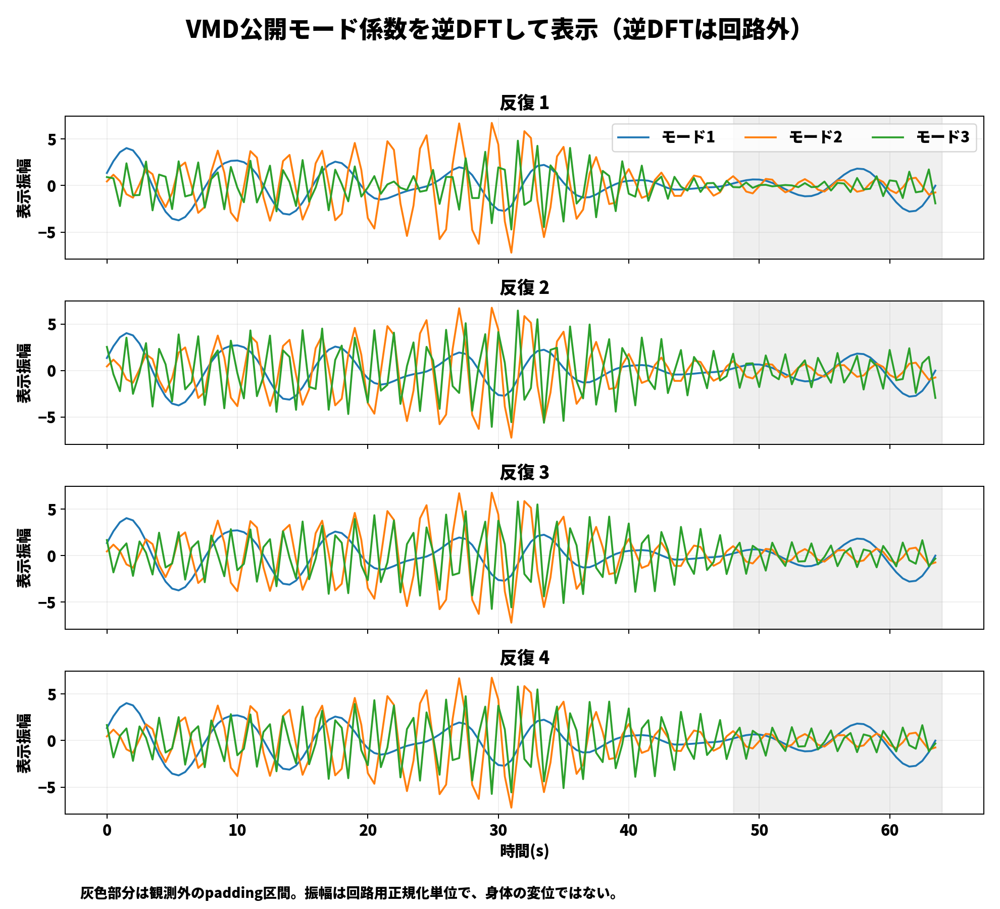
実際の公開モード係数から、表示側で逆DFTした波形
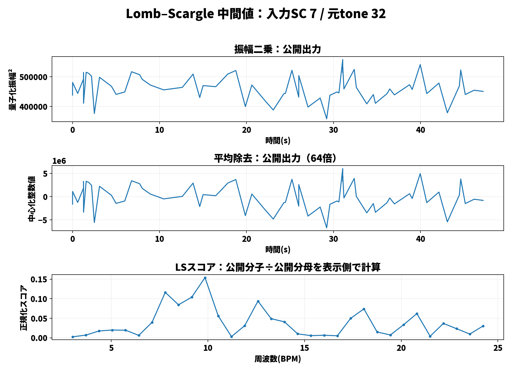
LS回路の選択サブキャリアにおける段階ごとの数値
VMD診断の再実行 / LS診断の再実行
報告時に伝える結論と次の実験
- VMDは「回数不足」だけでは説明できない。初期中心[8,16,24]を、正解付きの別収録で検証する。
- LSは本数増の計算コストと、実データ推定値への効果を分けて示す。実呼吸の最適本数は未確定。
- 呼吸ベルトなどの同期GT、64秒以上の収録、記録時刻に基づく処理をそろえ、正常・異常・体動条件で評価する。
- 今回の結果を根拠に本番回路の設定を自動変更していない。候補回路・評価コードはresearch配下に独立して保存した。